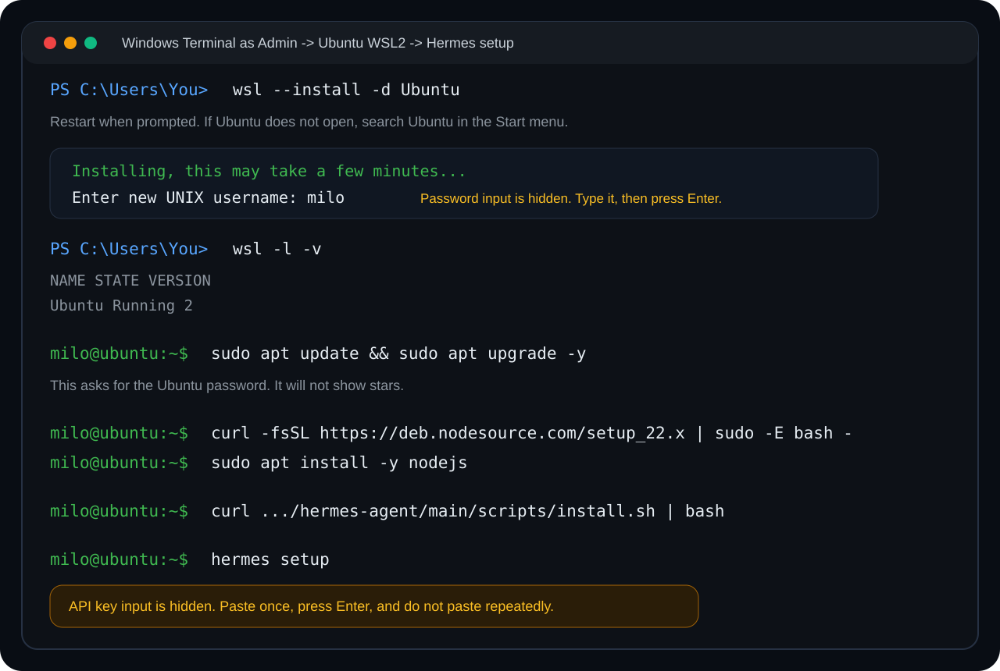
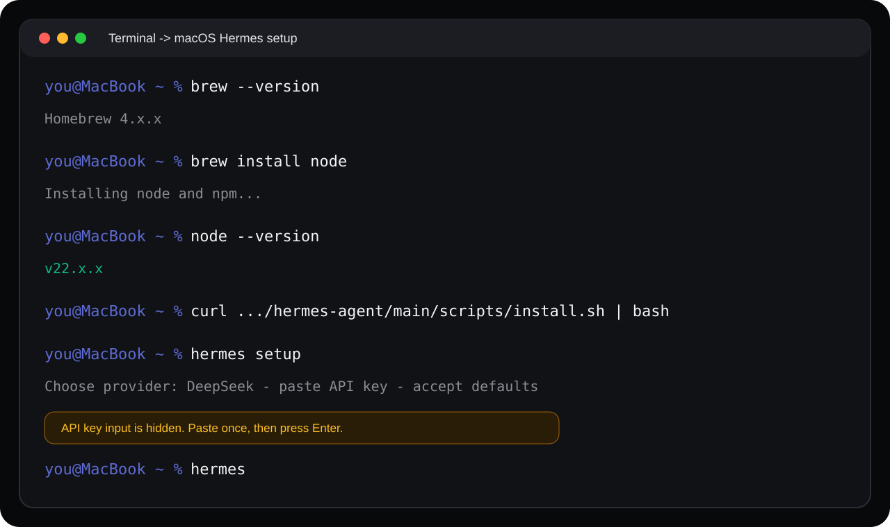

Set up Hermes Agent from zero, so your team can actually use it
A step-by-step visual guide for non-technical teammates. No command-line background required. Copy the commands, follow the screenshots, and run Hermes on Windows or macOS with DeepSeek as the recommended model provider.
What Hermes is
What it is
Hermes is an AI assistant that runs on your computer. It can read files, run commands, and help complete workflows. It is not limited to chatting in a browser.
What it can do
Create HTML reports, analyze spreadsheets, organize documents, assist deployment work, and turn repeated tasks into automated workflows.
Why DeepSeek
DeepSeek is easy to register, affordable, and works well for everyday office testing. A small balance is usually enough for a long trial.
Prepare DeepSeek and terminal
Create a DeepSeek API key
- Open
platform.deepseek.comin your browser. - Register or sign in with phone or email.
- Open API Keys from the left menu.
- Create a new API key. A name like "My laptop" is fine.
- Copy the key that starts with
sk-and save it privately.
Add a small balance first
If the DeepSeek balance is empty, Hermes may stop responding. Add a small balance first, then enable balance reminders if needed.

What the terminal is
A terminal is a window where you control your computer with text commands. You do not need to memorize anything. Copy the commands in this guide exactly, paste them into the terminal, and press Enter.
Install on your system

Make sure your PC can run WSL2
Recommended: Windows 11, or Windows 10 version 2004 or later. If a company PC blocks permissions, ask IT to enable virtualization and Windows Subsystem for Linux.
Open PowerShell as administrator
Right-click the Start menu and choose Terminal (Admin) or Windows PowerShell (Admin). Continue only when the window title shows administrator mode.
Install WSL2 and Ubuntu
wsl --install -d Ubuntu
If Windows asks you to restart, restart first. If Ubuntu does not open automatically after restart, search Ubuntu in the Start menu and open it manually.
Finish Ubuntu first-time setup
The first launch may install for a few minutes. When you see Enter new UNIX username, type an English username. Then enter and confirm a password.
Confirm Ubuntu is using WSL2
Go back to PowerShell and run:
wsl -l -v
If Ubuntu shows VERSION 2, continue. If it shows 1, run:
wsl --set-version Ubuntu 2
Update Ubuntu packages
sudo apt update && sudo apt upgrade -y
sudo asks for your Ubuntu password. Again, the password will not be visible.
Install Node.js 22
curl -fsSL https://deb.nodesource.com/setup_22.x | sudo -E bash - sudo apt install -y nodejs node --version
If you see something like v22.x.x, Node.js is installed.
Install Hermes Agent
curl -fsSL https://raw.githubusercontent.com/NousResearch/hermes-agent/main/scripts/install.sh | bash
If you see "Could not resolve host" or the command hangs, try these in order:
A. Use a mirror (recommended, fastest)
curl -fsSL https://ghproxy.net/https://raw.githubusercontent.com/NousResearch/hermes-agent/main/scripts/install.sh | bash
B. Check VPN: If you're using a VPN or corporate proxy, turn it off and retry the original command. Some VPNs block GitHub.
C. Edit hosts file: Paste the command below, enter your password, then retry the original install command.
sudo sh -c 'echo "185.199.108.133 raw.githubusercontent.com" >> /etc/hosts'
After installation, close Ubuntu, reopen it, then run:
hermes --version
Configure DeepSeek
hermes setup
Choose DeepSeek, paste your API key, use deepseek-chat as the model, and press Enter for default options.

Open Terminal
Press Cmd + Space, search Terminal, and press Enter.
Check or install Homebrew
brew --version
If you see command not found, run:
/bin/bash -c "$(curl -fsSL https://raw.githubusercontent.com/Homebrew/install/HEAD/install.sh)"
Install Node.js
brew install node node --version
If you see something like v22.x.x, Node.js is installed.
Install Hermes Agent
curl -fsSL https://raw.githubusercontent.com/NousResearch/hermes-agent/main/scripts/install.sh | bash
If you see "Could not resolve host" or the command hangs, try these in order:
A. Use a mirror (recommended, fastest)
curl -fsSL https://ghproxy.net/https://raw.githubusercontent.com/NousResearch/hermes-agent/main/scripts/install.sh | bash
B. Check VPN: If you're using a VPN or corporate proxy, turn it off and retry the original command. Some VPNs block GitHub.
C. Edit hosts file: Paste the command below, enter your password, then retry the original install command.
sudo sh -c 'echo "185.199.108.133 raw.githubusercontent.com" >> /etc/hosts'
After installation, close Terminal, reopen it, then check:
hermes --version
Configure DeepSeek
hermes setup
Choose DeepSeek, paste your API key, and use deepseek-chat as the model.
Check whether it works
Run this command
hermes chat -q "Hello, please briefly introduce yourself"
hermes in the terminal and press Enter to enter chat mode.FAQ
Q: What if wsl --install fails?
Confirm your system is Windows 10 2004+ or Windows 11, and make sure virtualization is enabled. On a company laptop, IT may need to enable it.
Q: What if I see hermes: command not found?
Close and reopen the terminal. If it still fails, run source ~/.bashrc or source ~/.zshrc.
Q: I pasted the API key but nothing appeared. Did it fail?
Usually no. Hermes hides API key input, so you will not see characters, stars, or dots. Paste once and press Enter.
Q: Where is the API key stored?
Usually in ~/.hermes/.env. You can also run hermes setup again.
Q: How do I switch models?
Run hermes model, or type /model in chat mode.
Q: How much does DeepSeek cost?
Everyday office testing is usually inexpensive. The exact cost depends on how much you use it.
Q: How do WSL and Windows files connect?
Inside WSL, Windows files are under /mnt/c/. In Windows File Explorer, open \\wsl$\Ubuntu to browse Ubuntu files.
Q: I see Could not resolve host or network timeout when installing Hermes?
This is common when accessing GitHub from certain regions. Try one of these four approaches:
A. Use a mirror (recommended, fastest)
curl -fsSL https://ghproxy.net/https://raw.githubusercontent.com/NousResearch/hermes-agent/main/scripts/install.sh | bash
B. Use VPN: If you have a personal VPN, keep it on while running the original command. If using a corporate VPN, try turning it off.
C. Edit hosts file
sudo sh -c 'echo "185.199.108.133 raw.githubusercontent.com" >> /etc/hosts'
Enter your Ubuntu/macOS password (characters won't show), then retry the original install command.
D. Manual install
① Open raw.githubusercontent.com/NousResearch/hermes-agent/main/scripts/install.sh in your browser
② Select all and copy the page contents
③ In terminal, type nano install.sh, right-click to paste, press Ctrl+X then Y then Enter to save
④ Run bash install.sh